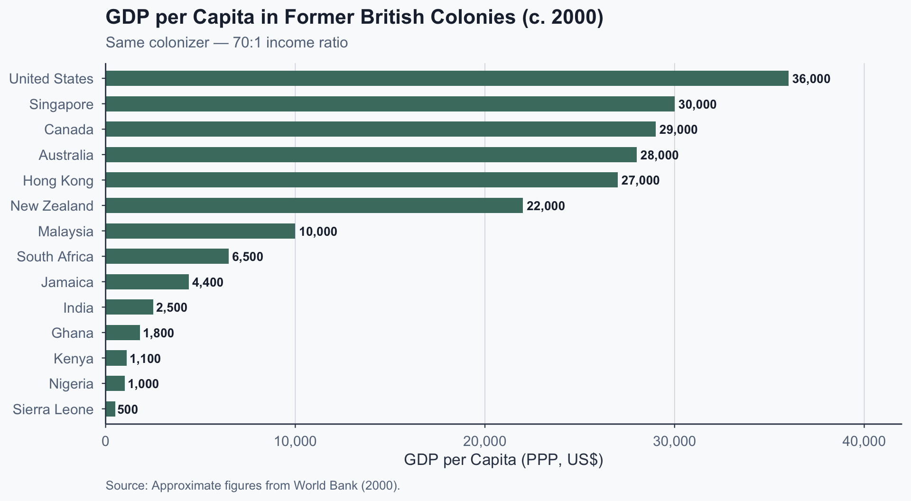
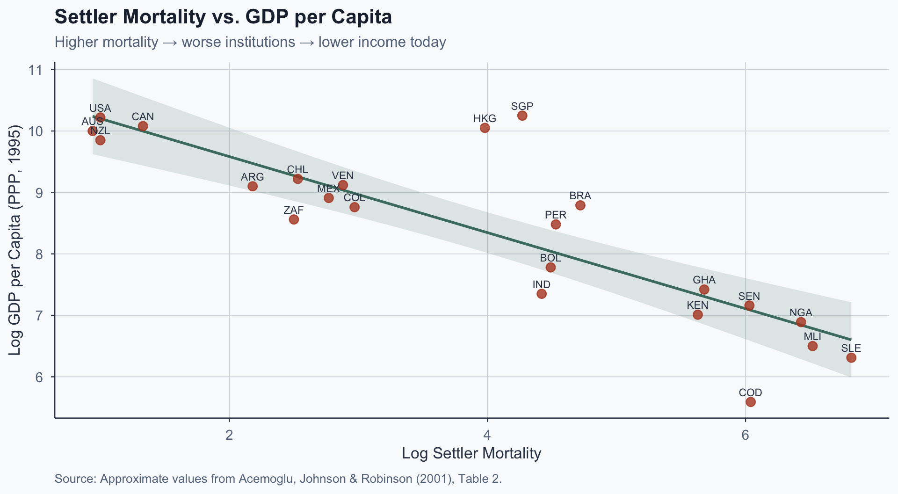
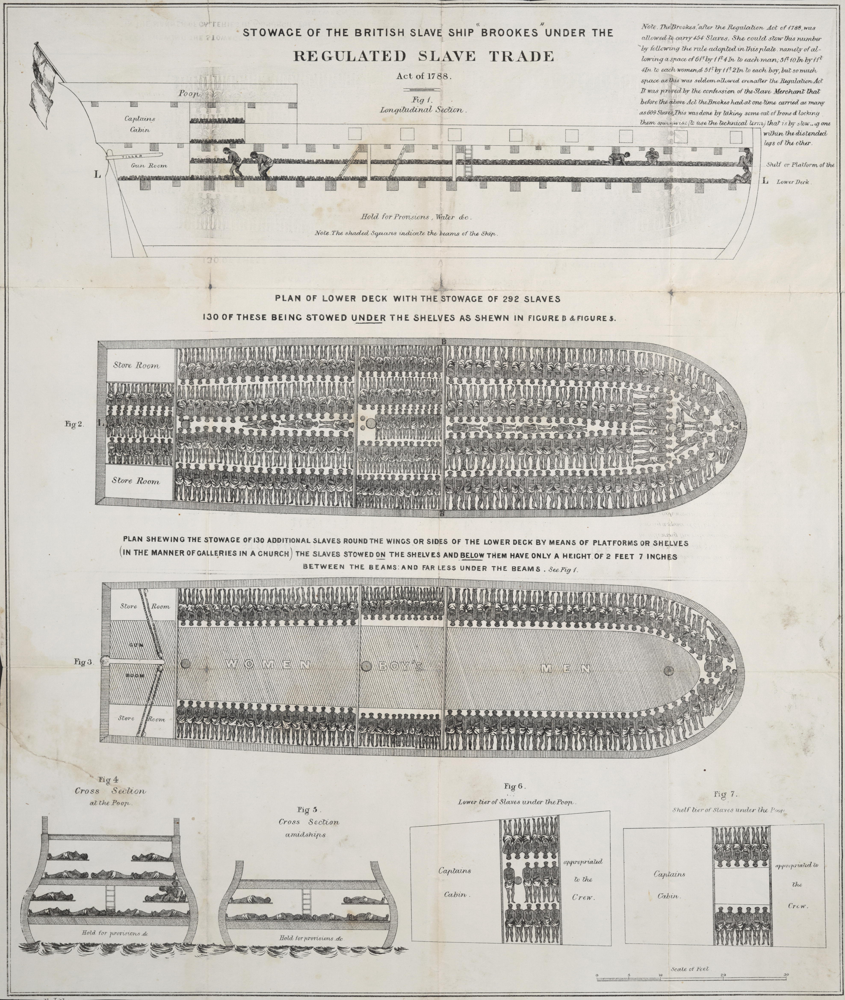
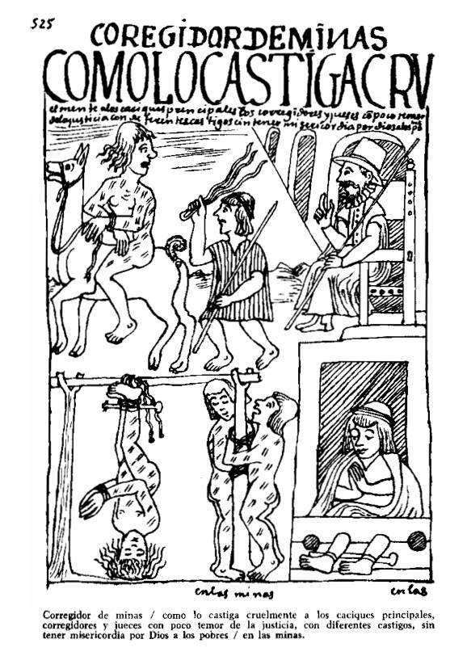
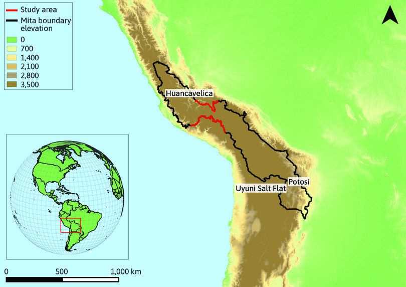
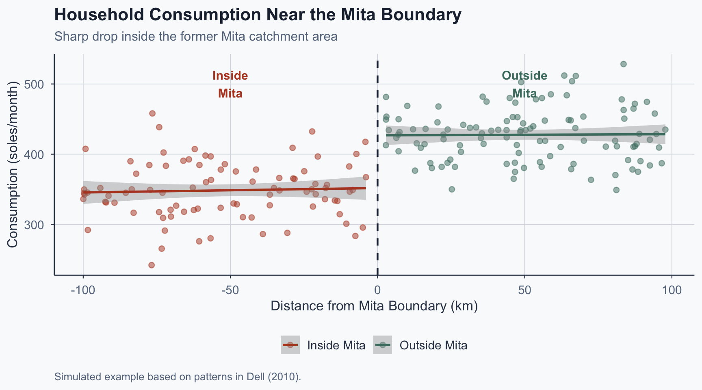
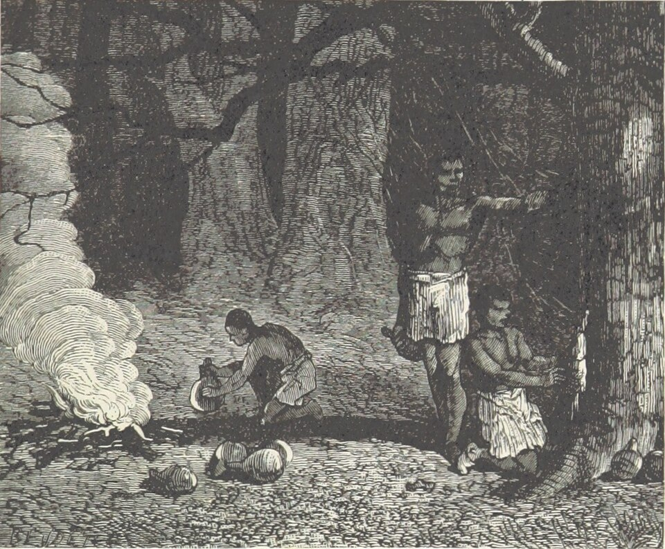
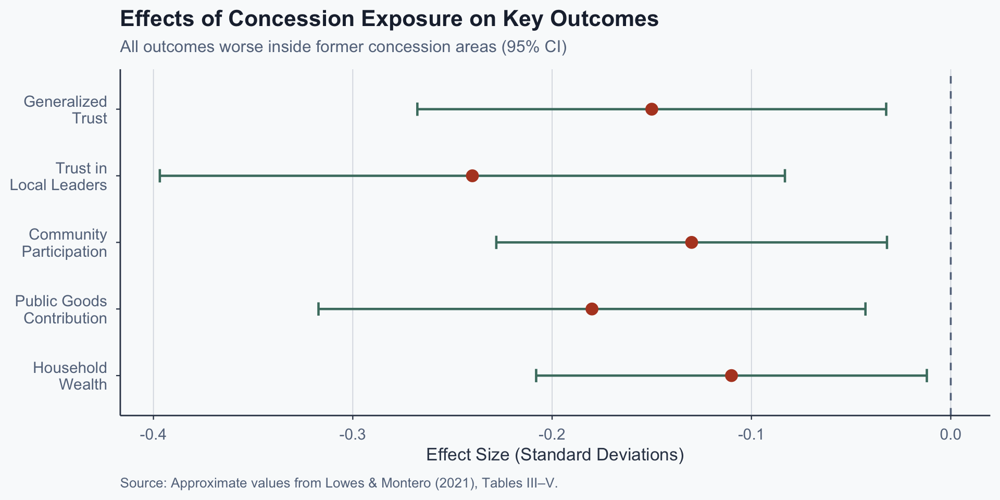
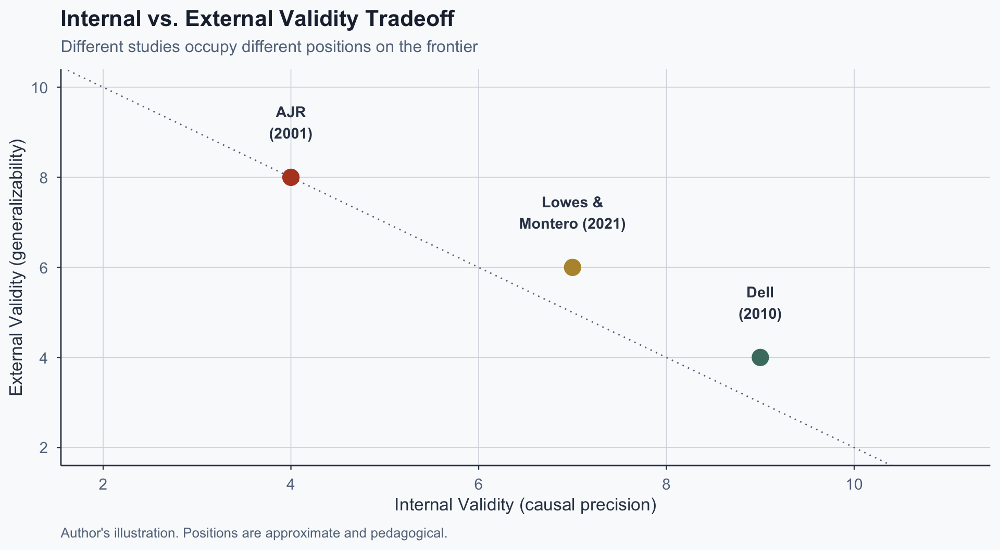

![]()
%%{init: {'theme': 'base', 'themeVariables': {'fontSize': '22px', 'primaryColor': '#4a7c6f', 'primaryTextColor': '#f9fafb', 'primaryBorderColor': '#3a6e62', 'lineColor': '#b44527', 'edgeLabelBackground': '#f9fafb'}, 'flowchart': {'useMaxWidth': true, 'nodeSpacing': 50, 'rankSpacing': 70}, 'width': 1100, 'height': 650}}%%
flowchart LR
A["Settler<br/>Mortality"] --> B["Settlement<br/>Patterns"]
B --> C["Institutional<br/>Form"]
C --> D["Long-Run<br/>Income"]
Comparative Politics
Lecture 3: Colonial Legacies
The Puzzle
The Divergence Puzzle

Figure 1: Source: Approximate figures from World Bank (2000), PPP dollars.
Why the Divergence?
Same colonizer. Same language. Same legal tradition.
Radically different outcomes.
Three candidate explanations:
- Geography: climate, disease, natural resources
- Institutions: colonial rules that persist after independence
- Human capital: skills and knowledge settlers brought
Which one — and how would we tell them apart?
So What?
The divergence is not random. Something systematic separates rich former colonies from poor ones.
We need a theory that explains the pattern — and a method that tests it.
Next: Acemoglu, Johnson & Robinson provide the theory.
AJR: The Macro Framework
The AJR Argument
Acemoglu, Johnson & Robinson (2001) propose a single causal chain:
- European settler mortality varied dramatically across colonies
- High mortality → Europeans don’t settle → extractive institutions
- Low mortality → Europeans settle → property-rights institutions
- Institutional form persists → explains income differences today
The Causal Chain
Source: Author’s diagram based on Acemoglu, Johnson & Robinson (2001).
Settler Mortality and Income

Figure 2: Source: Approximate values from Acemoglu, Johnson & Robinson (2001), Table 2.
The IV Logic
AJR use settler mortality as an instrument for institutions:
The idea: mortality shaped where Europeans settled, which shaped institutions, which shaped income.
Exclusion restriction: settler mortality affects income only through institutions.
If valid: this isolates the causal effect of institutions on development.
Extractive vs. Inclusive Institutions
| Dimension | Extractive | Inclusive |
|---|---|---|
| Property rights | Elite only | Broadly protected |
| Political access | Narrow | Broad-based |
| Economic rents | Concentrated | Distributed |
| Rule of law | Selective | Generalized |

The Critiques
Albouy (2012): Settler mortality data is unreliable
- Many estimates from military campaigns, not settlers
- Small coding changes make the results fragile
Glaeser, La Porta, Lopez-de-Silanes & Shleifer (2004):
- Settlers brought human capital, not just institutions
- Schooling predicts growth as well as institutional measures
- The IV cannot distinguish institutions from education
Big theory, but which specific mechanism?
So What?
AJR gives us the macro scaffolding: colonial institutions cause divergent development.
But the theory can’t tell us which specific institution or which mechanism drives persistence.
Next: Dell (2010) sharpens the test with one labor system and a precise boundary.
Dell: The Sharp Test
What Was the Mita?
Spanish colonial forced labor system (1573–1812):
- Indigenous communities conscripted for mines
- Potosí (Bolivia) and Huancavelica (Peru)
- ~200 districts within a defined boundary
- One of the largest forced labor systems in history

Dell’s Core Finding
Inside vs. outside the Mita boundary today (Dell, 2010):
- 25% lower household consumption
- 6 percentage points higher child stunting
- Effects persist 200 years after abolition
- The boundary has no modern function

The Full Causal Chain
%%{init: {'theme': 'base', 'themeVariables': {'fontSize': '20px', 'primaryColor': '#4a7c6f', 'primaryTextColor': '#f9fafb', 'primaryBorderColor': '#3a6e62', 'lineColor': '#b44527', 'edgeLabelBackground': '#f9fafb'}, 'flowchart': {'useMaxWidth': true, 'nodeSpacing': 40, 'rankSpacing': 55}, 'width': 1100, 'height': 650}}%%
flowchart LR
A["Mita<br/>(Forced Labor)"] --> B["Population<br/>Collapse"]
B --> C["Fewer<br/>Haciendas"]
C --> D["Weaker Political<br/>Representation"]
D --> E["Fewer<br/>Public Goods"]
E --> F["Lower<br/>Consumption<br/>Today"]
Source: Author’s diagram based on Dell (2010).
The Counterintuitive Link
Why fewer haciendas = worse outcomes:
- Mita devastated indigenous populations
- Fewer workers → fewer large estates
- Haciendas were exploitative — but hacendados had political voice
- Hacendados lobbied for roads and infrastructure
The Counterintuitive Link
Why fewer haciendas = worse outcomes:
An extractive local elite can be a vehicle for public goods.
What Is an RDD?
Regression Discontinuity Design — the core intuition:
- Villages on either side of the Mita boundary are nearly identical
- Same geography, altitude, ethnicity, climate
- Only difference: inside or outside the Mita catchment
- Any outcome difference → attributable to the Mita itself
Compare units that are nearly identical except for one thing: treatment.
RDD: Visual Intuition

Figure 3: Simulated example illustrating RDD logic at the Mita boundary.
AJR vs. Dell: Comparing Designs
| Feature | AJR (2001) | Dell (2010) |
|---|---|---|
| Unit of analysis | Countries | Villages |
| Source of variation | Settler mortality | Mita boundary |
| Comparison | Colony A vs. B | Village A vs. neighbor B |
| Identification | Instrumental variable | Geographic discontinuity |
| Specificity | “Institutions” (broad) | One labor system |
Stronger identification, but narrower scope. This is the credibility-generalizability tradeoff.
Exercise 1: Identify the Weakest Link
Class Exercise (5 min)
Prompt: Write Dell’s causal chain in your own words. Then:
- Which link is most vulnerable to alternatives?
- What evidence would strengthen or weaken it?
- Could the chain work differently in another context?
So What?
Dell identifies a clean causal effect of one colonial labor system on modern outcomes.
But does this tell us about “colonialism” broadly — or just one institution in one place?
Next: The persistence puzzle — why do colonial effects last centuries?
The Persistence Puzzle
Three Channels of Persistence
Why do colonial effects last centuries after independence?
%%{init: {'theme': 'base', 'themeVariables': {'fontSize': '22px', 'primaryColor': '#4a7c6f', 'primaryTextColor': '#f9fafb', 'primaryBorderColor': '#3a6e62', 'lineColor': '#334155', 'edgeLabelBackground': '#f9fafb'}, 'flowchart': {'useMaxWidth': true, 'nodeSpacing': 50, 'rankSpacing': 60}, 'width': 1100, 'height': 650}}%%
flowchart LR
A["Colonial<br/>Experience"] --> B["Formal<br/>Institutions"]
A --> C["Human<br/>Capital"]
A --> D["Trust &<br/>Norms"]
B --> E["Development<br/>Today"]
C --> E
D --> E
Source: Author’s illustration.
Lowes & Montero: The Congo Concessions
Lowes & Montero (2021) test the behavioral channel:
- Congo Free State (1885–1908): Leopold II’s private empire
- Private companies granted rubber extraction monopolies
- Forced labor enforced through systematic violence
- RDD at concession boundaries — same logic as Dell

Violence as the Business Model
How rubber quotas were enforced:
- Hostage-taking of women and children
- Mutilation for missed quotas
- Village burning to enforce compliance
Violence was public and collective — it destroyed norms of cooperation and community safety.
Indirect Rule: Chiefs as Enforcers
Indigenous chiefs were conscripted as quota enforcers:
- Europeans couldn’t supervise the vast interior directly
- Chiefs forced to organize labor and deliver quotas
- Chiefs who resisted were replaced or killed
- Chiefs who complied became agents of extraction
Either way, local authority was delegitimized. The institution survived in form but lost its legitimacy.
Effects of Concession Exposure

Figure 4: Source: Approximate values from Lowes & Montero (2021), Tables III–V.
Dell vs. Lowes & Montero
| Dimension | Dell (2010) | Lowes & Montero (2021) |
|---|---|---|
| Location | Peru | Congo |
| Extraction | Silver mining (Mita) | Rubber (concessions) |
| Channel | Institutional destruction | Trust + legitimacy erosion |
| Mechanism | Elites eliminated → no lobby | Chiefs co-opted → authority poisoned |
| Design | RDD at Mita boundary | RDD at concession boundary |
Same outcome (persistent underdevelopment), different mechanism.
Exercise 2: Advising a Post-Colonial Government
Class Exercise (5 min)
Prompt: You are advising a former colony suffering from both weak institutions and low social trust.
- Which legacy channel do you prioritize — and why?
- Can you fix institutions without fixing trust?
- What would “success” look like in 20 years?
So What?
Colonial persistence is not one thing. It works through multiple channels:
- Formal institutions (AJR, Dell)
- Human capital (Glaeser et al.)
- Trust and norms (Lowes & Montero, Nunn & Wantchekon)
Stronger identification → more local claims. Weaker identification → bolder but less credible ones.
Synthesis
The Identification Tradeoff

Figure 5: Author’s illustration. Positions are approximate and pedagogical.
The Full Comparison
| AJR (2001) | Dell (2010) | Lowes & Montero (2021) | |
|---|---|---|---|
| Scope | Cross-country | One boundary | One boundary |
| Treatment | Settler mortality | Mita labor | Rubber concessions |
| Channel | Institutions | Political economy | Trust + legitimacy |
| Design | IV | RDD | RDD |
| Claim | Broad | Local | Local |
The Single Takeaway
Important
Colonial institutions persist through multiple channels — formal rules, human capital, and social trust — and no single study captures all of them.
- The strongest identification gives the narrowest claims
- The broadest claims rest on the weakest identification
- This tradeoff is fundamental, not a flaw to fix
References
References I
Acemoglu, D., Johnson, S., & Robinson, J. A. (2001). The colonial origins of comparative development: An empirical investigation. American Economic Review, 91(5), 1369–1401.
Albouy, D. (2012). The colonial origins of comparative development: An empirical investigation: Comment. American Economic Review, 102(6), 3059–3076.
Dell, M. (2010). The persistent effects of Peru’s mining mita. Econometrica, 78(6), 1863–1903.
Glaeser, E. L., La Porta, R., Lopez-de-Silanes, F., & Shleifer, A. (2004). Do institutions cause growth? Journal of Economic Growth, 9(3), 271–303.
References II
Lowes, S., & Montero, E. (2021). Concessions, violence, and indirect rule: Evidence from the Congo Free State. Quarterly Journal of Economics, 136(4), 2047–2091.
Nunn, N., & Wantchekon, L. (2011). The slave trade and the origins of mistrust in Africa. American Economic Review, 101(7), 3221–3252.
World Bank. (2000). World development indicators. The World Bank.
Popescu (JCU) Comparative Politics Lecture 3: Colonial Legacies